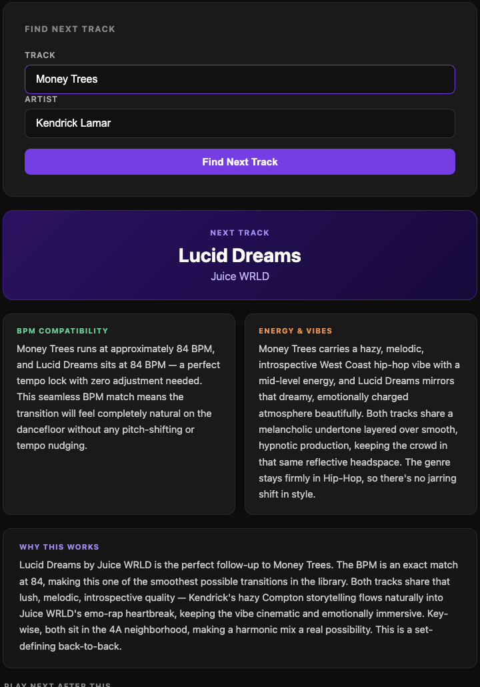

DJ Set Assistant 🎧
An AI-powered mixing companion for DJs, and my deepest dive into AI-assisted development so far. I got into DJing through a love of music rather than theory knowledge, and working out which tracks blend well took me ages, especially since I love mixing R&B and hip-hop, where harmonic conventions are far less established than in house or electronic. So I built the tool I needed.
Type in the track you're playing and it recommends the best next song from your own library, scored on BPM match, harmonic key compatibility (Camelot wheel), and vibe. The scoring runs in Python with track data from the MusicBrainz API, and the Claude API generates a plain-English explanation of why the transition works, plus alternatives and a preview of the next three tracks.